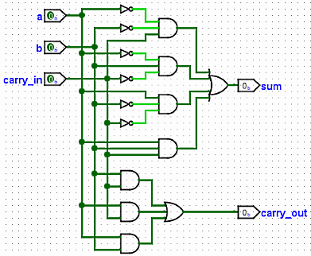
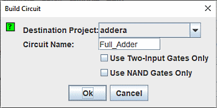

生成电路
构建电路按钮会构建一个电路，其中的门电路对应当前为每个输出选择的表达式。电路的输入和输出会按它们在输入与输出选项卡中的顺序自上而下显示。一般来说，生成的电路布局会比较整洁；事实上，Logisim 组合分析模块的一个用途就是整理绘制不佳的电路。不过，与任何自动布局一样，它无法体现人工绘制电路时可能包含的结构意图。

当您点击构建电路按钮时，会出现一个对话框，提示您选择要将电路放入哪个项目以及您希望为其指定的名称。

如果输入的是已有电路名称，该电路会在 Logisim 请求确认后被替换。
构建电路对话框包含两个选项。
- 仅使用二输入门选项表示希望生成的所有门都只有两个输入。（非门当然是例外。）
- 仅使用与非门选项表示希望将电路转换为只使用与非门的形式。如果希望只使用二输入与非门，可以同时选择这两个选项。
Logisim 无法为包含任何 XOR 运算符的表达式构建仅使用与非门的电路。因此，如果任何输出的表达式包含 XOR，此选项将被禁用。
下一节： 用户指南。